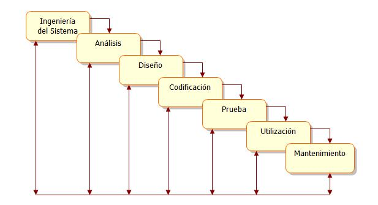

El curso Introducción al Desarrollo de Software, hace parte del componente profesional disciplinar del programa Tecnología en Desarrollo de software y tiene como objetivo desarrollar conceptos básicos, identificar y reconocer los modelos de desarrollo de software y los pasos para el desarrollo de software como curso introductorio al programa. El curso es de tipo teórico de dos (2) créditos, está estructurado en dos (2) unidades y ha sido diseñado para ejecutarse en el lapso de 16 semanas. La primera unidad se denomina Conceptos básicos del software y está orientada a reconocer e identificar los conceptos básicos que se utilizan en el desarrollo de software, la clasificación del mismo, y los modelos del proceso del software. Por su parte, la segunda unidad - Etapas del desarrollo de software considera las diferentes actividades que hacen parte del ciclo de vida de desarrollo como son: Análisis y especificación de requerimientos, Diseño, codificación, Pruebas, Instalación y mantenimiento.
El curso tiene los siguientes propósitos:
1. Fortalecer en el estudiante la concepción del desarrollo de software, a través de la terminología propia utilizada, de manera que fortalezca su aprendizaje autónomo.
2. Garantizar que el estudiante comprenda los diferentes modelos de procesos que se utilizan en el desarrollo de software, mediante el reconocimiento de las diferentes actividades que hacen parte de cada uno de estos modelos.
Se espera, que a través de estos propósitos se alcancen las siguientes competencias:
1. El estudiante comprende los conceptos propios utilizados en el desarrollo de software, que se convertirán en conocimientos previos y significativos para el buen desarrollo de éste y otros cursos del programa de Tecnología en desarrollo de Software.
2. El estudiante reconoce las actividades, acciones y tareas que se llevan a cabo en los diferentes modelos de procesos para el desarrollo de software con calidad.